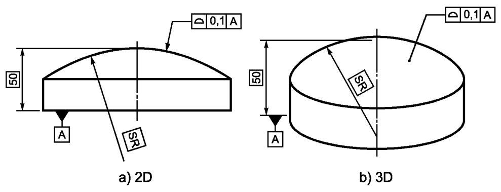
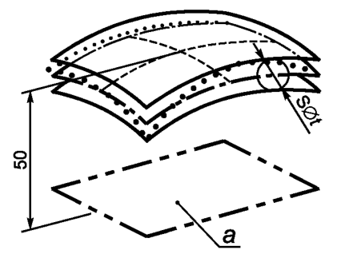

Выявленная нормируемая поверхность, должна располагаться между двумя эквидистантными поверхностями, являющимися огибающими семейства сфер диаметром 0,1, центры которых расположены на заданной относительно базовой плоскости А номинальной поверхности, см. рисунок ниже
Поле допуска ограничено двумя поверхностями, являющимися огибающими семейства сфер, с диаметрами, равными значению допуска t, и центрами, расположенными на номинальной поверхности, заданной относительно базовой плоскости А, см. рисунок ниже
